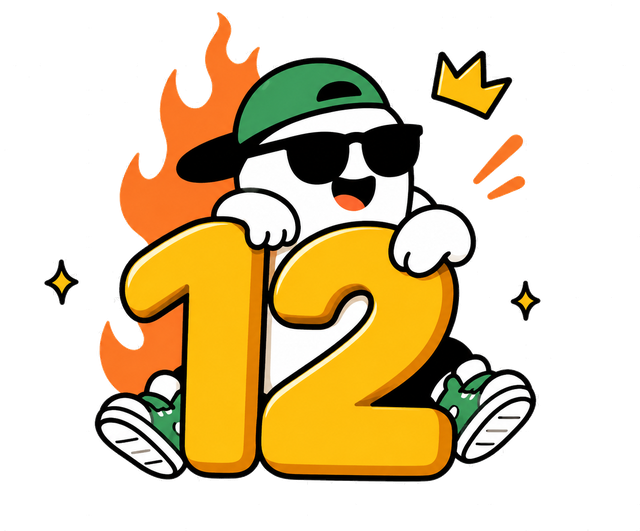
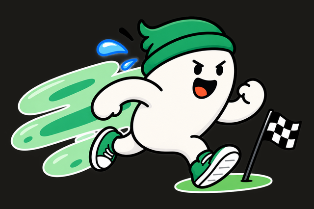
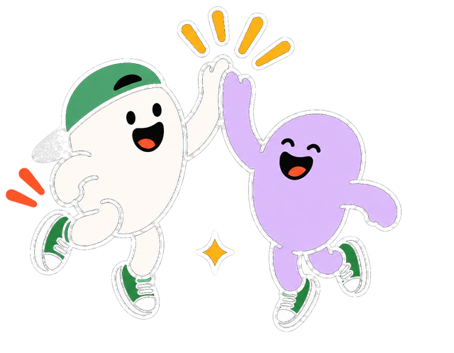
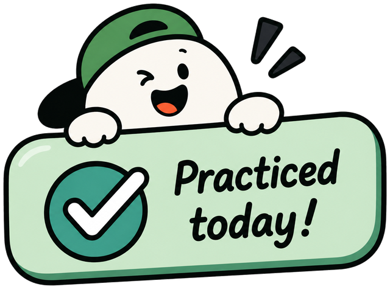

Same content, same order, nothing deleted — but the white cards are gone. Full-bleed colour blocks, big type doing the hierarchy, and a voice that needles you into finishing instead of politely reporting numbers.

daysdeep45 min practising. 6 hrs on your phone. we both saw it.

19 min left. that's one bad reel.
stop motion animation · 6/25 min
Builds a shareable card of your week.
Panic me if my streak's dyingReminds you at 8pm on any day you haven't practised.
Live class heads-upNotifies you 15 minutes before a live class starts.
Sunday guilt tripA summary of your week, every Sunday morning.

The reference stacks seven identical white cards. Same content, same order — but here each section is a full-bleed colour block. The colour tells you which section you're in, so the labels and boxes aren't needed.
A screen that politely reports numbers gets ignored. This one needles: "finish it, coward".
Two rules keep it usable. The joke is aimed at the situation, never the person — and every slang heading carries a plain-English line under it, so you never have to get the joke to find your settings.
BLOB is a lump of clay that gets sculpted as you practise — shapeless early, nearly finished at 97%, a puddle when your streak dies.
Tinker teaches you to make things by hand, so the mascot is the thing you're making. Its shape is calculated from your percentage, not decoration.
Flat colour, 3px ink outline, hard offset shadow — no gradients. The same shadow sits on the tiles and badges, so the whole screen feels like one material.
Not pixel art: 8-bit reads as a millennial reference, not a Gen Z one.
Built story-shaped so it drops straight into Instagram. It names what you actually did, not just a streak number, so it means something to whoever sees it.
It's earned, not offered — it only appears after you finish a lesson.
Violet, coral and amber shout — but the skills list sits on plain canvas. It holds seven rows of numbers and needs the quiet to stay readable.
If everything shouts, nothing does.
Flat colour, 3px ink outline, hard offset shadow, no gradients — drawn by hand in SVG.
Each one is placed where it carries information or a reward — never as filler. Illustrations generated with ChatGPT, then cut out and colour-matched to the kit by hand.

All from the Design Kit, nothing invented. One colour per job — so you learn what a colour means once and it holds everywhere.
| Card | Colour | Why |
|---|---|---|
| Status / streak | violet | It opens the screen, so it needed the most weight. Violet is the only kit colour dark enough to carry white text — that's what makes it the one "hero" surface. |
| Up next | coral | The hottest colour in the kit, saved for the one thing you're meant to tap. Coral appears nowhere else, so it always means act. |
| Skills list | canvas | Seven rows of percentages and minutes. This is the one section you actually read, so it gets no colour at all. |
| Receipts / badges | amber | Rewards should feel like the loudest moment. Amber on ink is the brightest, most readable pair in the kit — it can shout without hurting legibility. |
| BLOB card | mint | Sits between violet and coral and has to separate them without competing. Mint is the calmest saturated colour available. |
| Class tiles | terracotta sky | These are browsing tiles, not status. Different colours help you tell one class from another at a glance — the colour is identity, not meaning. |
| Done states | sage | Only ever used for finished things — ticks, completed rows, badge dots. Never used decoratively. |
One thing worth flagging back to the kit: coral, sky and mint all fail AA with small text on them, so I kept text on those either large, bold, or on a white pill. A darker step of each would fix it.
The joke is in the delivery — it never replaces the information.
And the slang never stands alone. "the boring bit" is funny but it doesn't tell you it's settings, so every joke heading now carries a plain-English line under it — "Account, plan and notification settings". Same for "still going" and "receipts". If you don't get the joke, or English isn't your first language, the screen still works. The personality is a layer on top of the label, never a replacement for it.
This was built in a few days, so there are things I'd redo with more time and a round of real feedback. Here's what I'd pick up first.
Some lines land, some are trying too hard. "finish it, coward" works. A few others are jokes I wrote for myself, not for the user. I'd cut the weakest third, and I'd want a rule for how the tone softens when someone is genuinely struggling — right now it taunts the same way whether you're on day 12 or day 1.
The class tiles are the one part I'd rebuild. Right now they're just coloured boxes with a name on them — they don't tell you where you left off, how long is left, or why you should go back to that class instead of a different one. It's the section I spent the least time on and it shows.
I drew them all by hand in SVG to keep them consistent, but a few of the metaphors are a stretch — the knot for crochet and the pot for claymation take a second to read. They're consistent, which is the important part, but consistent isn't the same as obvious. Those need another pass.
Everything here assumes you have a streak and a lesson in progress. I haven't designed day one, the empty state, or the screen you see after you've been away for a month — and that last one is probably the most important screen in the whole app, because it's where people decide whether to come back.
It's funny the first week. I don't know if it's still funny in week six, and I don't have data to say either way. I'd want the tone to earn its way up — start gentle, get cheekier as the streak grows — and I'd want an easy way to turn it off without turning off notifications entirely.
Every decision here is reasoned, but reasoning isn't validation. The flex card in particular is a guess — I think people would share it, but I'd want to actually watch five people hit that screen before I believed it.